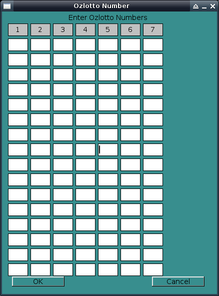
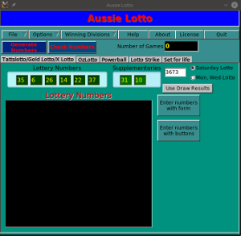

Aussie Lotto Manual
Table of Contents
1 Introduction
This program helps to choose and check Tattslotto numbers. It is designed for an Australian audience, and supports Tattslotto (Saturday, Monday and Wednesday), X-Lotto, Gold Lotto, Oz Lotto (all states), Lotto Strike (NSW) and Powerball (all states). This doesn't do Super 66 or 'The Pools', but these games may get supported later.
The program generates random numbers and allows you to display them and save them to a file, for marking off on a game card. You can then later load the numbers, enter the numbers from the draw and instantly determine which divisions you've won, and which games (sequence of numbers) won you that division.
In addition to generating random numbers, you can also add your own to the list (or just use your own numbers without any random ones).
The purpose of this program is to make it easy and instant to check your ticket, without having to check it manually or take it to a newsagent. It also provides you with random numbers to use.
2 How to use
When you start the program, you'll have a menu, a button to generate numbers, to check numbers and four tabs labelled "Tattslotto/Gold Lotto/X-Lotto", "OzLotto", "Powerball" and "Lotto Strike".

2.1 Generating numbers
Simply click on the tab of the lottery type you want to play, enter the number of games in the "Number of Games" box and click "Generate Numbers". The selected numbers are listed in the scrollable box. The "Ensure Powerball" feature means that if you are playing at least 45 games, you are guaranteed to have the powerball.
2.2 Adding additional numbers
You can add further numbers you select yourself at any time by clicking the "Enter numbers with form" button. Each row represents a game. Enter the numbers you want to play, using as little or many rows as you like. Click "OK" and the games will be added. You can repeat this step as many times as you like. 
Alternatively, you can use a more 'point and click' way to enter numbers by using the button selection form. Click "Enter numbers with buttons"
2.3 Saving numbers
You can save the numbers for future reference by going to the File menu and clicking "Save". Give it a filename (the program will add '.tatts' to the end of the file name.
2.4 Loading numbers
You can load numbers at any time by clicking on the File menu and clicking "Open". Select the file you want and click "OK". Aussie Lotto will automatically detect what game type it is and change the displayed game type to the type loaded.
2.5 Checking results
To check your ticket, load the game you saved (if not already loaded) and enter the results from the draw and the supplementaries. When done, click "Check Numbers" and a results window will come up listing any games won, if any, in order of division. You can save these results by clicking "Save". 
3 Other
The numbers you need to win each division for each game can be obtained through the "Winning Divisions" menu.
While this program has been tested, no guarantees are made as to the accuracy of its results. The author takes no responsibility for any loss as a result of use of this program.
The files that are saved are plain text files. Should you wish to print the numbers, simply open up the saved .tatts file in a text editor and print. Note that for powerball saved games, the last number in each row is the powerball.
This program was created by Dennis Katsonis.
E-mail: dennisk@netspace.net.au